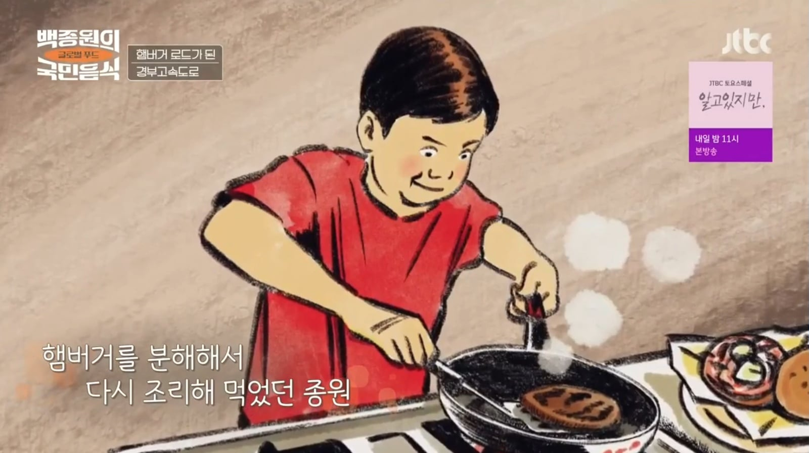

내가 원하는데로 햄버거 분해후 다시 조합해서 먹을 수 있는 능력이 있음

내가 원하는데로 햄버거 분해후 다시 조합해서 먹을 수 있는 능력이 있음
그래도 내가 햄버거를 만들었다고는 안 하네 ㅋㅋㅋ
꺼드럭대는건 그렇다 치고 마지막에 약오르쥬? 이 말은 무슨 이유로 한거임?ㅋㅋㅋ 뜬금없이 저런 멘트가 왜 나옴
범인따위가 백종원선생님의 생각을 읽을수있겠냐?
난 그런 능력이 있는데 너넨 그런 능력이 없지?
약오르지? 뭐 그런 의미 아닐까?
??: 여기서 난 이런 선택을 해버려
이젠 무서움 ㅋㅋ
보법이 달라
저럴거면 햄버거를 왜 시켜먹어 만들어먹지
모든일은 백으로 시작해 백으로 끝난다
- 소장 백 -
")
중간에 어묵이랑 단무지 끼워서 먹었겠쥬?
먹던 햄버겁니까? 새걸 사갖다가..
자기객관화도 안되고 자아가 비대해져서 스스로를 속이는 지경
백종원대표님의 원시버거 다들 먹어봐라
그러고보니 햄버거는 창업 했나?

본인은 남이 햄버거 조립해서 먹으면
약이 올랐었나?..
역시 범인은 이해할수 없는 경지구만
이거 완전 게놈새끼네
라면에 파 마늘 썰어 넣었다고 자랑할 사람
'난 그런 능력이 있잖아요' 라고 하는거 봐서는 자기는 능력이 돼서 햄버거도 만들어 먹는데 님들은 능력이 안 되고 못 만들어먹는데 내 이야기 들으니 부럽지? 하는 취지에서 약오르냐고 하는듯..
내가 햄버거를 지배할 수 있다 나는 햄버거의 왕이다